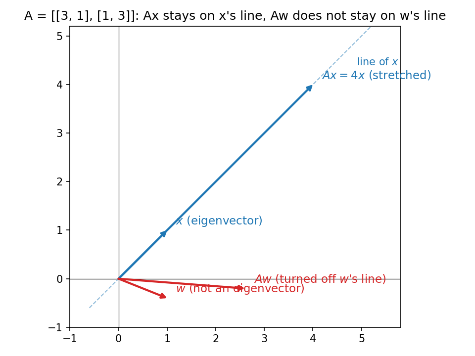

6. Eigenvalues, eigenvectors, diagonalization
6.1 What this chapter is for
A matrix \(A\) is a machine that moves vectors: \(\mathbf{x} \mapsto A\mathbf{x}\). Most vectors get turned as well as stretched. But a few special vectors are only stretched — never turned. Those are the \(eigenvectors\), and the stretch factors are the \(eigenvalues\).
Why care? The lecture’s motivation: a system of differential equations like \(\frac{dv}{dt} = 4v - 5w\), \(\frac{dw}{dt} = 2v - 3w\) can be written \(\frac{d\mathbf{u}}{dt} = A\mathbf{u}\). Guessing solutions of the form \(\mathbf{u}(t) = e^{\lambda t}\mathbf{x}\) and substituting gives \(\lambda e^{\lambda t}\mathbf{x} = A e^{\lambda t}\mathbf{x}\) — and the \(e^{\lambda t}\) cancels, leaving \(A\mathbf{x} = \lambda \mathbf{x}\). So solving the whole differential equation comes down to solving this one algebraic equation. The same trick will unlock the Fibonacci sequence in §6.9, matrix powers in §6.8, and — further down the road — PCA in Chapter 24.
This chapter answers four questions, in order:
- What are \(eigenvalues\) and \(eigenvectors\)?
- How do we \(find\) them?
- What is \(diagonalization\) — and why does it make powers trivial?
- What is special about \(symmetric\) matrices?
Basically, … Every matrix has a few “favorite directions.” Feed it a favorite direction and it just scales it — no rotation. This chapter is about finding those directions and using them to take the matrix apart.
6.2 The definition
Def. For a square matrix \(A\), a scalar \(\lambda\) is an \(eigenvalue\) and a nonzero vector \(\mathbf{x}\) is an \(eigenvector\) (for \(\lambda\)) if \[A\mathbf{x} = \lambda \mathbf{x}.\] This is the \(eigen\) \(equation\).
Two things to lock in:
- \(\mathbf{x} \ne \mathbf{0}\) is required. Without it, \(A\mathbf{0} = \lambda\mathbf{0}\) would make every \(\lambda\) an “eigenvalue” — meaningless.
- Geometrically: \(A\) either \(stretches\) \(\mathbf{x}\) (if \(|\lambda| > 1\)), \(shrinks\) it (if \(|\lambda| < 1\)), \(flips\) it (if \(\lambda < 0\)) — but it does not change its direction.

Note the \(\lambda = 0\) case: \(A\mathbf{x} = \mathbf{0}\) with \(\mathbf{x} \ne \mathbf{0}\) means \(\mathbf{x}\) lives in the \(null\) \(space\) \(N(A)\) (§4.7). So “\(0\) is an eigenvalue” is just a fancy way of saying “\(A\) kills some nonzero vector.”
Basically, … An eigenvector is a direction the matrix respects: it scales the arrow but refuses to turn it. The eigenvalue is the scaling number on the dial.
6.3 How to find them: the characteristic equation
Start from the eigen equation and rearrange: \[A\mathbf{x} = \lambda \mathbf{x} \;\Longleftrightarrow\; (A - \lambda I)\mathbf{x} = \mathbf{0}.\] We need a nonzero \(\mathbf{x}\) satisfying this. That is possible iff \(A - \lambda I\) is \(singular\) — iff its determinant is zero (§3.6–3.7): \[\det(A - \lambda I) = 0.\] This is the \(characteristic\) \(equation\). The left side is the \(characteristic\) \(polynomial\): for an \(n \times n\) matrix it has degree \(n\), so (counting multiplicity) there are \(n\) roots — the eigenvalues.
The recipe:
- Solve \(\det(A - \lambda I) = 0\) for the eigenvalues \(\lambda_1, \ldots, \lambda_n\).
- For each \(\lambda_i\), solve \((A - \lambda_i I)\mathbf{x} = \mathbf{0}\) — i.e. find \(N(A - \lambda_i I)\) (§4.7) — by elimination. Any nonzero vector there is an eigenvector.
Note (handy 2×2 check, from the lecture): the eigenvalues satisfy \[\lambda_1 + \lambda_2 = \operatorname{tr}(A) = a_{11} + a_{22}, \qquad \lambda_1 \lambda_2 = \det(A).\] If your computed eigenvalues fail either, recompute.
eg (eyeball it). A projection \(P\) onto a plane: for any \(\mathbf{x}\) in the plane, \(P\mathbf{x} = \mathbf{x}\) — so \(\lambda = 1\) is an eigenvalue, and every in-plane \(\mathbf{x}\) is an eigenvector. For \(\mathbf{x}\) perpendicular to the plane, \(P\mathbf{x} = \mathbf{0}\) — so \(\lambda = 0\) is an eigenvalue, with every perpendicular \(\mathbf{x}\) an eigenvector. No determinant needed when the geometry is this clear.
eg (eyeball it). The permutation matrix \(B = \begin{bmatrix} 0 & 1 \\ 1 & 0 \end{bmatrix}\) swaps coordinates: \(B\begin{bmatrix} 1 \\ 1 \end{bmatrix} = \begin{bmatrix} 1 \\ 1 \end{bmatrix}\) (so \(\lambda = 1\), eigenvector \((1,1)^T\)) and \(B\begin{bmatrix} 1 \\ -1 \end{bmatrix} = \begin{bmatrix} -1 \\ 1 \end{bmatrix} = -\begin{bmatrix} 1 \\ -1 \end{bmatrix}\) (so \(\lambda = -1\), eigenvector \((1,-1)^T\)).
eg (not always real). The rotation \(R = \begin{bmatrix} 0 & -1 \\ 1 & 0 \end{bmatrix}\) turns every vector by \(90^\circ\) — no real direction survives. The algebra agrees: \(\det(R - \lambda I) = \begin{vmatrix} -\lambda & -1 \\ 1 & -\lambda \end{vmatrix} = \lambda^2 + 1 = 0\), so \(\lambda = \pm i\). Eigenvalues can be complex. (Symmetric matrices are the safe case — always real eigenvalues, §6.11.)
Basically, … Finding eigenvalues = solving \(\det(A - \lambda I) = 0\). Finding eigenvectors = solving the homogeneous system \((A - \lambda I)\mathbf{x} = \mathbf{0}\) — the vectors the shifted matrix kills.
6.4 Worked example: eigenvalues and eigenvectors of a \(2 \times 2\)
eg (full steps). \(A = \begin{bmatrix} 3 & 1 \\ 1 & 3 \end{bmatrix}\).
Step 1 — characteristic equation: \[A - \lambda I = \begin{bmatrix} 3 - \lambda & 1 \\ 1 & 3 - \lambda \end{bmatrix}, \qquad \det(A - \lambda I) = (3 - \lambda)^2 - 1 = \lambda^2 - 6\lambda + 8.\] \[\lambda^2 - 6\lambda + 8 = (\lambda - 4)(\lambda - 2) = 0 \;\Longrightarrow\; \lambda_1 = 4,\ \lambda_2 = 2.\] Check: \(\lambda_1 + \lambda_2 = 6 = \operatorname{tr}(A)\) ✓; \(\lambda_1\lambda_2 = 8 = \det(A)\) ✓.
Step 2 — eigenvector for \(\lambda_1 = 4\): \[A - 4I = \begin{bmatrix} -1 & 1 \\ 1 & -1 \end{bmatrix}, \qquad (A - 4I)\mathbf{x} = \mathbf{0} \iff -x_1 + x_2 = 0 \iff x_2 = x_1.\] Pick \(x_1 = 1\): \(\mathbf{x}_1 = \begin{bmatrix} 1 \\ 1 \end{bmatrix}\).
Step 3 — eigenvector for \(\lambda_2 = 2\): \[A - 2I = \begin{bmatrix} 1 & 1 \\ 1 & 1 \end{bmatrix}, \qquad (A - 2I)\mathbf{x} = \mathbf{0} \iff x_1 + x_2 = 0 \iff x_2 = -x_1.\] Pick \(x_1 = 1\): \(\mathbf{x}_2 = \begin{bmatrix} 1 \\ -1 \end{bmatrix}\).
Step 4 — verify \(A\mathbf{x} = \lambda \mathbf{x}\): \[A\mathbf{x}_1 = \begin{bmatrix} 3 & 1 \\ 1 & 3 \end{bmatrix}\begin{bmatrix} 1 \\ 1 \end{bmatrix} = \begin{bmatrix} 4 \\ 4 \end{bmatrix} = 4\mathbf{x}_1 \;\checkmark, \qquad A\mathbf{x}_2 = \begin{bmatrix} 3 & 1 \\ 1 & 3 \end{bmatrix}\begin{bmatrix} 1 \\ -1 \end{bmatrix} = \begin{bmatrix} 2 \\ -2 \end{bmatrix} = 2\mathbf{x}_2 \;\checkmark.\]
Note: any nonzero multiple is also an eigenvector — \([2, 2]^T\), \([-1, 1]^T\), etc. An eigenvector names a direction, not a length. The full solution set for \(\lambda = 4\) is \(\operatorname{span}\{[1,1]^T\} = N(A - 4I)\), the \(eigenspace\) (§6.6).
Basically, … Two systems, solved in order: first the determinant gives the stretch factors, then each stretch factor gives a small linear system whose solutions are the directions.
6.5 A useful shift (and a warning)
eg (full steps). Let \(B = \begin{bmatrix} 0 & 1 \\ 1 & 0 \end{bmatrix}\) (the permutation matrix from §6.3) and note \(B + 3I = \begin{bmatrix} 3 & 1 \\ 1 & 3 \end{bmatrix} = A\), the matrix of §6.4. If \(B\mathbf{x} = \mu \mathbf{x}\), then \[(B + 3I)\mathbf{x} = B\mathbf{x} + 3\mathbf{x} = \mu \mathbf{x} + 3\mathbf{x} = (\mu + 3)\mathbf{x}.\] So \(A\) has the same eigenvectors as \(B\), with eigenvalues shifted by 3: \(B\)’s \((1, [1,1]^T)\) and \((-1, [1,-1]^T)\) become \(A\)’s \((4, [1,1]^T)\) and \((2, [1,-1]^T)\) — exactly what §6.4 found. Adding a multiple of \(I\) slides the spectrum without touching the directions.
Warning (from the lecture — do not skip). It is tempting to generalize: if \(A\mathbf{x}_1 = \lambda_1 \mathbf{x}_1\) and \(B\mathbf{x}_2 = \lambda_2 \mathbf{x}_2\), is \((\lambda_1 + \lambda_2)\) an eigenvalue of \(A + B\)? No — because \(\mathbf{x}_1\) need not equal \(\mathbf{x}_2\). The shift trick above works only because one and the same \(\mathbf{x}\) is an eigenvector of both \(B\) and \(3I\) (every vector is an eigenvector of \(I\)). Sharing eigenvectors is a strong condition — it is exactly what diagonalization (§6.7) will exploit.
Basically, … \(A = B + cI\) keeps every eigenvector of \(B\) and just adds \(c\) to every eigenvalue. But you can’t add eigenvalues across two arbitrary matrices — the eigenvectors have to match.
6.6 Eigenspaces, and why distinct eigenvalues give independence
Def. The \(eigenspace\) for \(\lambda\) is \(N(A - \lambda I)\): every eigenvector for \(\lambda\), plus \(\mathbf{0}\). It is a subspace (§4.2): it is exactly “everything \(A - \lambda I\) kills.”
Claim. Eigenvectors belonging to \(distinct\) eigenvalues are \(linearly\) \(independent\).
Proof for two (from the lecture; the \(n\)-case follows the same argument): suppose \(A\mathbf{x}_1 = \lambda_1 \mathbf{x}_1\), \(A\mathbf{x}_2 = \lambda_2 \mathbf{x}_2\) with \(\lambda_1 \ne \lambda_2\), and \[c_1\mathbf{x}_1 + c_2\mathbf{x}_2 = \mathbf{0} \tag{1}\] Apply \(A\) to both sides: \[c_1\lambda_1\mathbf{x}_1 + c_2\lambda_2\mathbf{x}_2 = \mathbf{0} \tag{2}\] Subtract \(\lambda_2 \times (1)\) from \((2)\): \[c_1(\lambda_1 - \lambda_2)\mathbf{x}_1 = \mathbf{0}.\] Since \(\lambda_1 \ne \lambda_2\) and \(\mathbf{x}_1 \ne \mathbf{0}\), we must have \(c_1 = 0\); similarly \(c_2 = 0\). Hence \(\{\mathbf{x}_1, \mathbf{x}_2\}\) is independent (§4.4).
Corollary: if an \(n \times n\) matrix has \(n\) distinct eigenvalues, it has \(n\) independent eigenvectors — and (next section) that is all diagonalization needs.
Basically, … Different eigenvalues pull in genuinely different directions — no eigenvector can be built out of eigenvectors for other eigenvalues. Enough distinct eigenvalues, enough independent directions.
6.7 Diagonalization: \(S^{-1}AS = \Lambda\)
Def. An \(n \times n\) matrix \(A\) is \(diagonalizable\) if there is an invertible \(S\) with \[S^{-1}AS = \Lambda,\] where \(\Lambda\) is diagonal. Equivalently \(A = S\Lambda S^{-1}\) and \(AS = S\Lambda\).
Why independent eigenvectors are the whole game: suppose \(A\) has \(n\) independent eigenvectors \(\mathbf{x}_1, \ldots, \mathbf{x}_n\). Stack them as columns: \(S = [\mathbf{x}_1 \;\cdots\; \mathbf{x}_n]\). Independent columns in a square matrix \(\Rightarrow\) \(S\) is invertible (§4.5). Then \[AS = A[\mathbf{x}_1 \;\cdots\; \mathbf{x}_n] = [A\mathbf{x}_1 \;\cdots\; A\mathbf{x}_n] = [\lambda_1\mathbf{x}_1 \;\cdots\; \lambda_n\mathbf{x}_n] = [\mathbf{x}_1 \;\cdots\; \mathbf{x}_n]\begin{bmatrix} \lambda_1 & & \\ & \ddots & \\ & & \lambda_n \end{bmatrix} = S\Lambda.\] Left-multiply by \(S^{-1}\): \(S^{-1}AS = \Lambda\). Done. So:
- \(n\) independent eigenvectors \(\Rightarrow\) \(A\) is diagonalizable;
- in particular, \(n\) distinct eigenvalues \(\Rightarrow\) \(A\) is diagonalizable (§6.6).
Two remarks from the lecture:
- \(S\) is not unique: scaling any eigenvector still gives an eigenvector, so many \(S\)’s work.
- \(\Lambda\) is (up to ordering): its diagonal entries must be the eigenvalues of \(A\). Why? From \(AS = S\Lambda\), column 1 reads \(A\mathbf{y}_1 = \lambda_1 \mathbf{y}_1\) — column 1 of \(S\) is forced to be an eigenvector for whatever sits at \(\Lambda_{11}\).
eg (full steps). \(A = \begin{bmatrix} 1 & 4 \\ 2 & 3 \end{bmatrix}\).
Step 1 — eigenvalues: \[\det(A - \lambda I) = \begin{vmatrix} 1 - \lambda & 4 \\ 2 & 3 - \lambda \end{vmatrix} = (1 - \lambda)(3 - \lambda) - 8 = \lambda^2 - 4\lambda - 5 = (\lambda - 5)(\lambda + 1).\] \[\lambda_1 = 5,\quad \lambda_2 = -1.\] Distinct \(\Rightarrow\) diagonalizable.
Step 2 — eigenvectors. For \(\lambda_1 = 5\): \[A - 5I = \begin{bmatrix} -4 & 4 \\ 2 & -2 \end{bmatrix} \;\Longrightarrow\; -4x_1 + 4x_2 = 0 \;\Longrightarrow\; \mathbf{x}_1 = \begin{bmatrix} 1 \\ 1 \end{bmatrix}.\] For \(\lambda_2 = -1\): \[A + I = \begin{bmatrix} 2 & 4 \\ 2 & 4 \end{bmatrix} \;\Longrightarrow\; 2x_1 + 4x_2 = 0 \;\Longrightarrow\; \mathbf{x}_2 = \begin{bmatrix} -2 \\ 1 \end{bmatrix}.\]
Step 3 — assemble \(S = [\mathbf{x}_1\ \mathbf{x}_2] = \begin{bmatrix} 1 & -2 \\ 1 & 1 \end{bmatrix}\), \(\Lambda = \begin{bmatrix} 5 & 0 \\ 0 & -1 \end{bmatrix}\) (order matched: column 1 \(\leftrightarrow\) eigenvalue 5).
Step 4 — verify \(S^{-1}AS = \Lambda\). \(\det S = 1\cdot 1 - (-2)\cdot 1 = 3\), so \(S^{-1} = \frac{1}{3}\begin{bmatrix} 1 & 2 \\ -1 & 1 \end{bmatrix}\). \[AS = \begin{bmatrix} 1 & 4 \\ 2 & 3 \end{bmatrix}\begin{bmatrix} 1 & -2 \\ 1 & 1 \end{bmatrix} = \begin{bmatrix} 5 & 2 \\ 5 & -1 \end{bmatrix},\] \[S^{-1}(AS) = \frac{1}{3}\begin{bmatrix} 1 & 2 \\ -1 & 1 \end{bmatrix}\begin{bmatrix} 5 & 2 \\ 5 & -1 \end{bmatrix} = \frac{1}{3}\begin{bmatrix} 15 & 0 \\ 0 & -3 \end{bmatrix} = \begin{bmatrix} 5 & 0 \\ 0 & -1 \end{bmatrix} = \Lambda \;\checkmark.\]
Basically, … Diagonalization = describing the matrix in the language of its own eigenvectors. \(S\) is the dictionary (its columns are the new basis); in that language \(A\) is just “\(\lambda_1\) along direction 1, \(\lambda_2\) along direction 2, …” — pure scaling, no mixing. Same map, better basis.
6.8 Powers become easy: \(A^k = S\Lambda^k S^{-1}\)
From \(S^{-1}AS = \Lambda\): \[S^{-1}A^2S = (S^{-1}AS)(S^{-1}AS) = \Lambda^2,\] and the same for any \(k\): \(A^k = S\Lambda^k S^{-1}\). Since \(\Lambda\) is diagonal, \(\Lambda^k\) is just the diagonal entries raised to \(k\). (Also: \(A\mathbf{x} = \lambda \mathbf{x} \Rightarrow A^2\mathbf{x} = A(\lambda \mathbf{x}) = \lambda A\mathbf{x} = \lambda^2 \mathbf{x}\) — the same \(S\) diagonalizes \(A^2\).)
eg (full steps). \(A = \begin{bmatrix} 1 & 4 \\ 2 & 3 \end{bmatrix}\) from §6.7, with \(S = \begin{bmatrix} 1 & -2 \\ 1 & 1 \end{bmatrix}\), \(\Lambda = \operatorname{diag}(5, -1)\), \(S^{-1} = \frac{1}{3}\begin{bmatrix} 1 & 2 \\ -1 & 1 \end{bmatrix}\).
\[\Lambda^2 = \begin{bmatrix} 25 & 0 \\ 0 & 1 \end{bmatrix}, \qquad S\Lambda^2 = \begin{bmatrix} 1 & -2 \\ 1 & 1 \end{bmatrix}\begin{bmatrix} 25 & 0 \\ 0 & 1 \end{bmatrix} = \begin{bmatrix} 25 & -2 \\ 25 & 1 \end{bmatrix},\] \[A^2 = S\Lambda^2S^{-1} = \frac{1}{3}\begin{bmatrix} 25 & -2 \\ 25 & 1 \end{bmatrix}\begin{bmatrix} 1 & 2 \\ -1 & 1 \end{bmatrix} = \frac{1}{3}\begin{bmatrix} 27 & 48 \\ 24 & 51 \end{bmatrix} = \begin{bmatrix} 9 & 16 \\ 8 & 17 \end{bmatrix}.\] Direct check: \(A^2 = \begin{bmatrix} 1 & 4 \\ 2 & 3 \end{bmatrix}\begin{bmatrix} 1 & 4 \\ 2 & 3 \end{bmatrix} = \begin{bmatrix} 9 & 16 \\ 8 & 17 \end{bmatrix}\) ✓. For \(A^{100}\) the direct route is hopeless; the diagonal route is three small multiplications.
Basically, … Powers of a diagonal matrix are trivial — just power each diagonal entry. Diagonalization moves that triviality over to \(A\).
6.9 Case study: the Fibonacci sequence via diagonalization
The Fibonacci recurrence \(F_{k+2} = F_{k+1} + F_k\) with \(F_0 = 0\), \(F_1 = 1\) is linear — so pack two consecutive terms into a vector and watch it evolve by one matrix.
Let \(\mathbf{u}_k = \begin{bmatrix} F_k \\ F_{k+1} \end{bmatrix}\). Then \[\mathbf{u}_{k+1} = \begin{bmatrix} F_{k+1} \\ F_{k+2} \end{bmatrix} = \begin{bmatrix} F_{k+1} \\ F_k + F_{k+1} \end{bmatrix} = \underbrace{\begin{bmatrix} 0 & 1 \\ 1 & 1 \end{bmatrix}}_{A}\begin{bmatrix} F_k \\ F_{k+1} \end{bmatrix} = A\mathbf{u}_k,\] so \(\mathbf{u}_k = A^k \mathbf{u}_0\) with \(\mathbf{u}_0 = \begin{bmatrix} 0 \\ 1 \end{bmatrix}\).
Step 1 — diagonalize \(A\). Characteristic equation: \[\det(A - \lambda I) = \begin{vmatrix} -\lambda & 1 \\ 1 & 1 - \lambda \end{vmatrix} = -\lambda(1 - \lambda) - 1 = \lambda^2 - \lambda - 1 = 0,\] \[\lambda_1 = \frac{1 + \sqrt{5}}{2}, \qquad \lambda_2 = \frac{1 - \sqrt{5}}{2}.\] Distinct \(\Rightarrow\) diagonalizable.
Step 2 — eigenvectors. Solve \((A - \lambda I)\mathbf{x} = \mathbf{0}\): \(\begin{bmatrix} -\lambda & 1 \\ 1 & 1-\lambda \end{bmatrix}\begin{bmatrix} x_1 \\ x_2 \end{bmatrix} = \mathbf{0}\). Take \(x_1 = 1\), \(x_2 = \lambda\): the first row gives \(-\lambda + \lambda = 0\) ✓; the second gives \(1 + (1 - \lambda)\lambda = 1 + \lambda - \lambda^2 = 0\) ✓ (since \(\lambda^2 = \lambda + 1\) from the characteristic equation). So \[\mathbf{x}_1 = \begin{bmatrix} 1 \\ \lambda_1 \end{bmatrix}, \qquad \mathbf{x}_2 = \begin{bmatrix} 1 \\ \lambda_2 \end{bmatrix}.\]
Step 3 — write \(\mathbf{u}_0\) in the eigenbasis: \(\mathbf{u}_0 = c_1\mathbf{x}_1 + c_2\mathbf{x}_2\): \[\begin{bmatrix} c_1 + c_2 \\ c_1\lambda_1 + c_2\lambda_2 \end{bmatrix} = \begin{bmatrix} 0 \\ 1 \end{bmatrix}.\] From the first row \(c_2 = -c_1\); the second gives \(c_1(\lambda_1 - \lambda_2) = 1\). Since \(\lambda_1 - \lambda_2 = \sqrt{5}\): \(c_1 = \frac{1}{\sqrt{5}}\), \(c_2 = -\frac{1}{\sqrt{5}}\).
Step 4 — iterate. Applying \(A\) \(k\) times scales each eigen-component by its eigenvalue (§6.8): \[\mathbf{u}_k = c_1\lambda_1^k \mathbf{x}_1 + c_2\lambda_2^k \mathbf{x}_2.\] The first component is \(F_k\): \[F_k = \frac{\lambda_1^k - \lambda_2^k}{\sqrt{5}} \qquad \text{(Binet's formula)}.\]
Step 5 — the approximation. \(|\lambda_2| = \frac{\sqrt{5} - 1}{2} \approx 0.618 < 1\), so \(\lambda_2^k \to 0\) as \(k\) grows. For large \(k\): \[F_k \approx \frac{\lambda_1^k}{\sqrt{5}}.\] For \(k = 100\): \(F_{100} \approx \dfrac{\left(\frac{1+\sqrt{5}}{2}\right)^{100}}{\sqrt{5}} \approx 3.54 \times 10^{20}\) (the exact value is \(354224848179261915075\) — the dropped term is far below \(1\)).
Note the lecture’s bottom line: this works because the recurrence is linear — \(\mathbf{u}_{k+1}\) is a linear function of \(\mathbf{u}_k\). A nonlinear recurrence breaks the whole analysis.
Basically, … Fibonacci is a little 2-D machine applied over and over. Diagonalization splits the machine into two independent 1-D scalers: one grows (the golden ratio \(\lambda_1 \approx 1.618\)), one shrinks (\(\lambda_2 \approx -0.618\)). After 100 steps the shrinker has vanished — the golden ratio runs the whole show.
6.10 When diagonalization fails: defective matrices
Not every matrix has enough independent eigenvectors. If an eigenvalue repeats but its eigenspace is too small, no invertible \(S\) exists.
eg. \(A = \begin{bmatrix} 3 & 1 \\ 0 & 3 \end{bmatrix}\): \(\det(A - \lambda I) = (3 - \lambda)^2 = 0\), so \(\lambda = 3\) twice. But \[A - 3I = \begin{bmatrix} 0 & 1 \\ 0 & 0 \end{bmatrix}, \qquad (A - 3I)\mathbf{x} = \mathbf{0} \iff x_2 = 0,\] so the eigenspace is just \(\operatorname{span}\{[1, 0]^T\}\) — one independent eigenvector for a \(2 \times 2\) matrix. No \(S\) can be built; \(A\) is \(defective\) (not diagonalizable).
Note: a repeated eigenvalue does not automatically break things — the identity matrix has \(\lambda = 1\) twice and is perfectly diagonalizable. The problem is only when the repeated eigenvalue comes with too few independent directions.
Basically, … Diagonalization needs \(n\) independent directions for an \(n \times n\) matrix. If an eigenvalue “should” supply two directions but only supplies one, the matrix can’t be un-mixed — it’s defective.
6.11 Symmetric matrices: the spectral theorem
For a \(real\) \(symmetric\) matrix (\(A^T = A\)) the lecture states the \(spectral\) \(theorem\) (the proof needs complex-matrix background, taken up later — here we take it as a fact):
- all eigenvalues of \(A\) are real;
- eigenvectors for distinct eigenvalues are linearly independent;
- \(A\) is orthogonally diagonalizable: there is an orthogonal \(Q\) with \[A = Q\Lambda Q^T, \qquad Q^TQ = I.\]
Since \(Q^TQ = I\) means \(Q^{-1} = Q^T\) (§5.4), this is diagonalization with a free inverse — no \(S^{-1}\) to compute. The columns of \(Q\) are orthonormal eigenvectors (§5.4).
Contrast with §6.10: no symmetric matrix is defective. Symmetric \(\Rightarrow\) always diagonalizable, always real spectrum. (A general real matrix has no such guarantee — §6.3’s rotation and §6.10’s defective matrix.)
eg (full steps). \(A = \begin{bmatrix} 3 & 1 \\ 1 & 3 \end{bmatrix}\) is symmetric (\(A^T = A\)). From §6.4: eigenvalues \(4, 2\) with eigenvectors \([1,1]^T\), \([1,-1]^T\) — already orthogonal (\([1,1]^T[1,-1] = 1 - 1 = 0\); §5.2: orthogonal nonzero vectors are independent).
Step 1 — normalize to unit eigenvectors: \[\mathbf{q}_1 = \frac{1}{\sqrt{2}}\begin{bmatrix} 1 \\ 1 \end{bmatrix}, \qquad \mathbf{q}_2 = \frac{1}{\sqrt{2}}\begin{bmatrix} 1 \\ -1 \end{bmatrix}, \qquad Q = [\mathbf{q}_1\ \mathbf{q}_2] = \frac{1}{\sqrt{2}}\begin{bmatrix} 1 & 1 \\ 1 & -1 \end{bmatrix}.\]
Step 2 — sanity check \(Q^TQ = I\) (the check the lecture insists on): \[Q^TQ = \frac{1}{2}\begin{bmatrix} 1 & 1 \\ 1 & -1 \end{bmatrix}\begin{bmatrix} 1 & 1 \\ 1 & -1 \end{bmatrix} = \frac{1}{2}\begin{bmatrix} 2 & 0 \\ 0 & 2 \end{bmatrix} = \begin{bmatrix} 1 & 0 \\ 0 & 1 \end{bmatrix} \;\checkmark.\] So \(Q^{-1} = Q^T\).
Step 3 — verify \(A = Q\Lambda Q^T\) with \(\Lambda = \begin{bmatrix} 4 & 0 \\ 0 & 2 \end{bmatrix}\): \[\Lambda Q^T = \begin{bmatrix} 4 & 0 \\ 0 & 2 \end{bmatrix}\frac{1}{\sqrt{2}}\begin{bmatrix} 1 & 1 \\ 1 & -1 \end{bmatrix} = \frac{1}{\sqrt{2}}\begin{bmatrix} 4 & 4 \\ 2 & -2 \end{bmatrix},\] \[Q\Lambda Q^T = \frac{1}{\sqrt{2}}\begin{bmatrix} 1 & 1 \\ 1 & -1 \end{bmatrix}\frac{1}{\sqrt{2}}\begin{bmatrix} 4 & 4 \\ 2 & -2 \end{bmatrix} = \frac{1}{2}\begin{bmatrix} 6 & 2 \\ 2 & 6 \end{bmatrix} = \begin{bmatrix} 3 & 1 \\ 1 & 3 \end{bmatrix} = A \;\checkmark.\]
Note: stacking the unnormalized eigenvectors \([1,1]^T, [1,-1]^T\) would still diagonalize \(A\) (§6.7) but would not give \(Q^TQ = I\). The orthonormality is what makes the inverse free.
Basically, … Symmetric matrices are the well-behaved citizens: real eigenvalues, and you can always pick eigenvectors that are unit-length and mutually perpendicular. Then diagonalization reads \(A = Q\Lambda Q^T\) — and \(Q\)’s inverse is just its transpose.
6.12 Why ML cares
- \(Covariance\) \(matrices\) are symmetric. Their eigendecomposition \(C = Q\Lambda Q^T\) exists with real eigenvalues and orthonormal eigenvectors — this is the engine of PCA (Chapter 24): the eigenvectors are the principal directions, the eigenvalues the variances along them.
- \(Quadratic\) \(forms\) \(x^TAx\): for symmetric \(A\), writing \(\mathbf{x}\) in the eigenbasis decouples the form into \(\sum_i \lambda_i y_i^2\) — the sign pattern of the eigenvalues tells you whether a critical point is a minimum, maximum, or saddle. Preview for the optimization chapters (10/12).
- \(A^TA\) is symmetric, so it diagonalizes as \(Q\Lambda Q^T\) — and its eigenvalues turn out to be the squared \(singular\) \(values\) of \(A\). That fact is the bridge to the SVD in Chapter 7 (stated here as a pointer, derived there).
6.13 Where this goes next
- Chapter 7 (SVD): eigendecomposition needs a square matrix. The singular value decomposition \(A = U\Sigma V^T\) extends the same idea — “special directions, pure scaling” — to every matrix, rectangular included. The eigenpairs of \(A^TA\) (§6.12(iii)) are the bridge.
- Chapter 24 (PCA): the covariance matrix is symmetric, so §6.11 applies directly: its orthonormal eigenvectors are the principal components, its eigenvalues the explained variances.
Problem set
- For \(A = \begin{bmatrix} 4 & 1 \\ 2 & 3 \end{bmatrix}\): (a) find the characteristic polynomial and both eigenvalues; (b) find an eigenvector for each; (c) verify \(A\mathbf{x} = \lambda \mathbf{x}\) for each pair; (d) check \(\lambda_1 + \lambda_2 = \operatorname{tr}(A)\) and \(\lambda_1\lambda_2 = \det(A)\).
- Let \(A = \begin{bmatrix} 2 & 2 \\ 1 & 3 \end{bmatrix}\). Which of these claims are true? (a) \(\lambda = 4\), \(\mathbf{x} = [1,1]^T\) is an eigenpair; (b) \(\lambda = 2\), \(\mathbf{x} = [1,-1]^T\) is an eigenpair; (c) \(\lambda = 1\), \(\mathbf{x} = [2,-1]^T\) is an eigenpair. Justify each by direct computation.
- Suppose \(P^2 = P\) (a projection matrix, §6.3) and \(P\mathbf{x} = \lambda \mathbf{x}\) with \(\mathbf{x} \ne \mathbf{0}\). Show \(\lambda\) can only be \(0\) or \(1\).
- Let \(B = \begin{bmatrix} 0 & 1 \\ 1 & 0 \end{bmatrix}\) with eigenpairs \((1, [1,1]^T)\) and \((-1, [1,-1]^T)\). (a) Without computing any determinant, find the eigenvalues and eigenvectors of \(A = B + 3I\). (b) Explain in one line why the same trick does not give the eigenvalues of \(B + C\) for a general matrix \(C\).
- Diagonalize \(A = \begin{bmatrix} 2 & 1 \\ 1 & 2 \end{bmatrix}\): find eigenvalues, eigenvectors, build \(S\) and \(\Lambda\), and verify \(S^{-1}AS = \Lambda\) explicitly.
- Using your diagonalization from Problem 5, compute \(A^3 = S\Lambda^3 S^{-1}\) and check the result by direct multiplication.
- For \(A = \begin{bmatrix} 3 & 1 \\ 0 & 3 \end{bmatrix}\): (a) find the eigenvalues; (b) find \(N(A - \lambda I)\) and its dimension; (c) explain why \(A\) is not diagonalizable.
- Orthogonally diagonalize \(A = \begin{bmatrix} 2 & 1 \\ 1 & 2 \end{bmatrix}\): give unit eigenvectors, form \(Q\), check \(Q^TQ = I\), and verify \(A = Q\Lambda Q^T\).
- For \(R = \begin{bmatrix} 0 & -1 \\ 1 & 0 \end{bmatrix}\): (a) find the eigenvalues from \(\det(R - \lambda I) = 0\); (b) verify \(\lambda_1 + \lambda_2 = \operatorname{tr}(R)\) and \(\lambda_1\lambda_2 = \det(R)\); (c) why does this not contradict the spectral theorem (§6.11)?
- Write down Binet’s formula from §6.9. (b) Use it to estimate \(F_{20}\), and bound the size of the neglected term \(|\lambda_2|^{20}/\sqrt{5}\). (c) In one line: why is the neglected term so small?
Solutions
Attempt each problem first, then click a problem to reveal its worked solution.
1. \(A = \begin{bmatrix} 4 & 1 \\ 2 & 3 \end{bmatrix}\).
\(A - \lambda I = \begin{bmatrix} 4 - \lambda & 1 \\ 2 & 3 - \lambda \end{bmatrix}\), \(\det = (4-\lambda)(3-\lambda) - 2 = \lambda^2 - 7\lambda + 10 = (\lambda - 5)(\lambda - 2)\). Eigenvalues: \(\lambda_1 = 5\), \(\lambda_2 = 2\).
\(\lambda_1 = 5\): \(A - 5I = \begin{bmatrix} -1 & 1 \\ 2 & -2 \end{bmatrix}\); \(-x_1 + x_2 = 0\), so \(\mathbf{x}_1 = \begin{bmatrix} 1 \\ 1 \end{bmatrix}\). \(\lambda_2 = 2\): \(A - 2I = \begin{bmatrix} 2 & 1 \\ 2 & 1 \end{bmatrix}\); \(2x_1 + x_2 = 0\), so \(\mathbf{x}_2 = \begin{bmatrix} 1 \\ -2 \end{bmatrix}\).
\(A\mathbf{x}_1 = \begin{bmatrix} 4+1 \\ 2+3 \end{bmatrix} = \begin{bmatrix} 5 \\ 5 \end{bmatrix} = 5\mathbf{x}_1\) ✓. \(A\mathbf{x}_2 = \begin{bmatrix} 4-2 \\ 2-6 \end{bmatrix} = \begin{bmatrix} 2 \\ -4 \end{bmatrix} = 2\mathbf{x}_2\) ✓.
\(5 + 2 = 7 = 4 + 3 = \operatorname{tr}(A)\) ✓; \(5 \cdot 2 = 10 = 4\cdot 3 - 1\cdot 2 = \det(A)\) ✓.
2. \(A = \begin{bmatrix} 2 & 2 \\ 1 & 3 \end{bmatrix}\).
- True: \(A\begin{bmatrix} 1 \\ 1 \end{bmatrix} = \begin{bmatrix} 4 \\ 4 \end{bmatrix} = 4\begin{bmatrix} 1 \\ 1 \end{bmatrix}\) ✓.
- False: \(A\begin{bmatrix} 1 \\ -1 \end{bmatrix} = \begin{bmatrix} 0 \\ -2 \end{bmatrix}\), but \(2\begin{bmatrix} 1 \\ -1 \end{bmatrix} = \begin{bmatrix} 2 \\ -2 \end{bmatrix}\) ✗.
- True: \(A\begin{bmatrix} 2 \\ -1 \end{bmatrix} = \begin{bmatrix} 4-2 \\ 2-3 \end{bmatrix} = \begin{bmatrix} 2 \\ -1 \end{bmatrix} = 1\cdot\begin{bmatrix} 2 \\ -1 \end{bmatrix}\) ✓. (Indeed the characteristic polynomial is \(\lambda^2 - 5\lambda + 4 = (\lambda-4)(\lambda-1)\), so \(2\) is not even an eigenvalue.)
3. \(P\mathbf{x} = \lambda \mathbf{x}\), \(\mathbf{x} \ne \mathbf{0}\), and \(P^2 = P\). Apply \(P\) to both sides of \(P\mathbf{x} = \lambda \mathbf{x}\): \(P^2\mathbf{x} = \lambda P\mathbf{x} = \lambda^2 \mathbf{x}\). But \(P^2 = P\), so \(P^2\mathbf{x} = P\mathbf{x} = \lambda \mathbf{x}\). Hence \(\lambda^2 \mathbf{x} = \lambda \mathbf{x}\), i.e. \((\lambda^2 - \lambda)\mathbf{x} = \mathbf{0}\). Since \(\mathbf{x} \ne \mathbf{0}\), \(\lambda^2 - \lambda = 0\), so \(\lambda = 0\) or \(\lambda = 1\). (This is exactly the plane-projection example of §6.3: \(\lambda = 1\) in the plane, \(\lambda = 0\) perpendicular to it.)
4. (a) By the shift rule (§6.5): \(A = B + 3I\) keeps \(B\)’s eigenvectors and adds \(3\) to each eigenvalue. Eigenpairs of \(A\): \((1 + 3,\ [1,1]^T) = (4,\ [1,1]^T)\) and \((-1 + 3,\ [1,-1]^T) = (2,\ [1,-1]^T)\) — matching the §6.4 computation. (b) The rule used \((B + cI)\mathbf{x} = B\mathbf{x} + c\mathbf{x}\), which needs \(\mathbf{x}\) to be an eigenvector of both \(B\) and \(cI\) — true since every vector is an eigenvector of \(I\). A general \(C\) does not share \(B\)’s eigenvectors, so \((B + C)\mathbf{x} \ne (\mu + \nu)\mathbf{x}\) in general (§6.5 warning).
5. \(A = \begin{bmatrix} 2 & 1 \\ 1 & 2 \end{bmatrix}\): \(\det(A - \lambda I) = (2-\lambda)^2 - 1 = \lambda^2 - 4\lambda + 3 = (\lambda - 3)(\lambda - 1)\); \(\lambda_1 = 3\), \(\lambda_2 = 1\).
\(\lambda_1 = 3\): \(A - 3I = \begin{bmatrix} -1 & 1 \\ 1 & -1 \end{bmatrix}\), \(\mathbf{x}_1 = \begin{bmatrix} 1 \\ 1 \end{bmatrix}\). \(\lambda_2 = 1\): \(A - I = \begin{bmatrix} 1 & 1 \\ 1 & 1 \end{bmatrix}\), \(\mathbf{x}_2 = \begin{bmatrix} 1 \\ -1 \end{bmatrix}\).
\(S = \begin{bmatrix} 1 & 1 \\ 1 & -1 \end{bmatrix}\), \(\Lambda = \begin{bmatrix} 3 & 0 \\ 0 & 1 \end{bmatrix}\). \(\det S = -2\), \(S^{-1} = -\frac{1}{2}\begin{bmatrix} -1 & -1 \\ -1 & 1 \end{bmatrix} = \begin{bmatrix} 1/2 & 1/2 \\ 1/2 & -1/2 \end{bmatrix}\). \[AS = \begin{bmatrix} 2 & 1 \\ 1 & 2 \end{bmatrix}\begin{bmatrix} 1 & 1 \\ 1 & -1 \end{bmatrix} = \begin{bmatrix} 3 & 1 \\ 3 & -1 \end{bmatrix},\] \[S^{-1}AS = \begin{bmatrix} 1/2 & 1/2 \\ 1/2 & -1/2 \end{bmatrix}\begin{bmatrix} 3 & 1 \\ 3 & -1 \end{bmatrix} = \begin{bmatrix} 3 & 0 \\ 0 & 1 \end{bmatrix} = \Lambda \;\checkmark.\]
6. \(\Lambda^3 = \operatorname{diag}(27, 1)\). \(S\Lambda^3 = \begin{bmatrix} 1 & 1 \\ 1 & -1 \end{bmatrix}\begin{bmatrix} 27 & 0 \\ 0 & 1 \end{bmatrix} = \begin{bmatrix} 27 & 1 \\ 27 & -1 \end{bmatrix}\). \[A^3 = S\Lambda^3 S^{-1} = \begin{bmatrix} 27 & 1 \\ 27 & -1 \end{bmatrix}\begin{bmatrix} 1/2 & 1/2 \\ 1/2 & -1/2 \end{bmatrix} = \begin{bmatrix} 14 & 13 \\ 13 & 14 \end{bmatrix}.\] Direct: \(A^2 = \begin{bmatrix} 5 & 4 \\ 4 & 5 \end{bmatrix}\), \(A^3 = A^2A = \begin{bmatrix} 5 & 4 \\ 4 & 5 \end{bmatrix}\begin{bmatrix} 2 & 1 \\ 1 & 2 \end{bmatrix} = \begin{bmatrix} 14 & 13 \\ 13 & 14 \end{bmatrix}\) ✓.
7. \(A = \begin{bmatrix} 3 & 1 \\ 0 & 3 \end{bmatrix}\).
- \(\det(A - \lambda I) = (3-\lambda)^2\): \(\lambda = 3\) (double root).
- \(A - 3I = \begin{bmatrix} 0 & 1 \\ 0 & 0 \end{bmatrix}\); \((A - 3I)\mathbf{x} = \mathbf{0}\) gives \(x_2 = 0\), \(x_1\) free. \(N(A - 3I) = \operatorname{span}\{[1,0]^T\}\), dimension \(1\).
- A \(2 \times 2\) matrix needs \(2\) independent eigenvectors to diagonalize; there is only one independent direction here. \(A\) is defective — not diagonalizable.
8. \(A = \begin{bmatrix} 2 & 1 \\ 1 & 2 \end{bmatrix}\) is symmetric; from Problem 5, eigenvalues \(3, 1\) with (orthogonal) eigenvectors \([1,1]^T\), \([1,-1]^T\).
Unit eigenvectors: \(\mathbf{q}_1 = \frac{1}{\sqrt{2}}\begin{bmatrix} 1 \\ 1 \end{bmatrix}\), \(\mathbf{q}_2 = \frac{1}{\sqrt{2}}\begin{bmatrix} 1 \\ -1 \end{bmatrix}\); \(Q = \frac{1}{\sqrt{2}}\begin{bmatrix} 1 & 1 \\ 1 & -1 \end{bmatrix}\). \[Q^TQ = \frac{1}{2}\begin{bmatrix} 1 & 1 \\ 1 & -1 \end{bmatrix}\begin{bmatrix} 1 & 1 \\ 1 & -1 \end{bmatrix} = \frac{1}{2}\begin{bmatrix} 2 & 0 \\ 0 & 2 \end{bmatrix} = I \;\checkmark.\] With \(\Lambda = \operatorname{diag}(3, 1)\): \(\Lambda Q^T = \frac{1}{\sqrt{2}}\begin{bmatrix} 3 & 3 \\ 1 & -1 \end{bmatrix}\), \[Q\Lambda Q^T = \frac{1}{2}\begin{bmatrix} 1 & 1 \\ 1 & -1 \end{bmatrix}\begin{bmatrix} 3 & 3 \\ 1 & -1 \end{bmatrix} = \frac{1}{2}\begin{bmatrix} 4 & 2 \\ 2 & 4 \end{bmatrix} = \begin{bmatrix} 2 & 1 \\ 1 & 2 \end{bmatrix} = A \;\checkmark.\]
9. (a) \(\det(R - \lambda I) = \begin{vmatrix} -\lambda & -1 \\ 1 & -\lambda \end{vmatrix} = \lambda^2 + 1 = 0\): \(\lambda_1 = i\), \(\lambda_2 = -i\). (b) \(i + (-i) = 0 = \operatorname{tr}(R)\) ✓; \(i \cdot (-i) = -i^2 = 1 = \det(R)\) ✓. (The trace/determinant relations hold over \(\mathbb{C}\) too.) (c) No contradiction: the spectral theorem applies to symmetric matrices, and \(R^T = \begin{bmatrix} 0 & 1 \\ -1 & 0 \end{bmatrix} = -R \ne R\). A non-symmetric real matrix may have complex eigenvalues — exactly what §6.3 warned about.
10. (a) \(F_k = \dfrac{\lambda_1^k - \lambda_2^k}{\sqrt{5}}\) with \(\lambda_1 = \frac{1+\sqrt{5}}{2}\), \(\lambda_2 = \frac{1-\sqrt{5}}{2}\). (b) Dropping the \(\lambda_2\) term: \(F_{20} \approx \lambda_1^{20}/\sqrt{5} \approx 6765.0000296\). The neglected term is \(|\lambda_2|^{20}/\sqrt{5} \approx 2.96 \times 10^{-5}\) — the estimate is correct to \(4\) decimal places, and rounding gives the exact integer \(F_{20} = 6765\). (c) Because \(|\lambda_2| \approx 0.618 < 1\): a number smaller than \(1\) raised to the \(20\)th power is tiny.